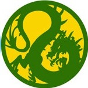

Dragon Clan

Enigmatic and mysterious, the samurai of the Dragon Clan have walked their own path since the Empire was first created. More individualistic and less concerned with material wealth than other clans, the Dragon have much in common with the monks of the Brotherhood of Shinsei, despite the considerable variety among their individual families.
Families
Kitsuki
Trait: +1 Awareness
The ever-perceptive Kitsuki serve the Dragon Clan as magistrates and court representatives, although they are better suited as the former. Even in court, however, a Kitsuki's ability to perceive truth when presented with lies has proven a tremendous asset to the Dragon in their pursuit of an Empire free of deceit and treachery.
Mirumoto
Trait: +1 Agility
The Mirumoto are the broad shoulders that carry the burden of the Dragon Clan. While the Togashi pursue their unique brand of enlightenment, the Mirumoto rule the clan in all but name, overseeing its day to day operations and filling the ranks of its military. Comprising more than half of the Clan's ranks, the Mirumoto are the most commonly encountered Dragon samurai in the Empire.
Togashi
Trait: +1 Reflexes
A monastic order rather than a true family, the Togashi accept all who wish to join their ranks, provided they are able to embrace the order's teachings and endure its trials, which many are not. Over the centuries, the monks of this order have used the divine blood of the Dragon Kami to create mystical tattoos that grant them incredible, supernatural abilities.
Agasha
Trait: +1 Willpower
Once a family of the Dragon Clan, the Agasha abandoned their Togashi masters when they felt the Dragon abandoned their duties to the Empire. The Phoenix have proven much more amenable to their unique brand of magic. The Agasha are highly experimental and curious, always pushing the boundaries of what is known and what can be safely attempted when dealing with magic.
Schools
Agasha Shugenja
During their centuries of service to the Dragon Clan, the Agasha pursued many unconventional paths of magic, pursuits which were carried out with the full resources and endorsement of the Agasha Shugenja School. In addition to their alchemical interests, the Agasha have always had an interest in the creation of spells that invoked kami of multiple elements simultaneously.
The Agasha Techniques focuses on the family's interest in merging the elements and casting multi-elemental spells. Although this practice has yet to be accepted, their Techniqu allows them to change the element of the spell they are casting, which gives them unmatched versatility in managing both their spells per day as well as their spell slots.
Keywords: Shugenja
Benefit: +1 Intelligence
Skills: Calligraphy (Cipher), any one Craft Skill, Defense, Etiquette, Lore: Theology, Spellcraft, any one High or Bugei Skill
Honor: 4.5
Outfit: Robes, Wakizashi, any 1 weapon, Scroll Satchel, Traveling Pack, 5 koku
Affinity/Deficiency: Fire/Water
Spells: Sense, Commune, Summon, 3 Fire, 2 Earth, and 1 Air
Techniques: Elements of All Things - The Agasha understand the interactions of the elements more so than perhaps any other family.
- When casting a spell, you may spend a Void Point to use a different Ring of your choosing rather than the appropriate Ring for that spell. This spell uses a spell slot for the Ring used to actually cast the spell.
- You gain a +5 TR on any spell with the Craft keyword.
Kitsuki Investigator
Even among the Dragon, the methods and beliefs imparted at the Kitsuki School are unusual. Alone in the Empire, the Kitsuki believe in the importance of evidence, something that most others cannot comprehend. The sensei of this unusual School place tremendous emphasis on developing the family's trademark powers of observation, honing them to a razor point, so much so that those trained in its Techniques possess a nearly infallible memory, perfect recall, and an almost inhuman attention to detail. Very little escapes the eye of a trained Kitsuki investigator.
Although their primary role is as the court representatives of the Dragon, the Kitsuki Investigators obviously make excellent magistrates, and their strengths lie in a gathering information both from the environment and from other people.
Keywords: Courtier
Benefit: +1 Perception
Skills: Sincerity, Courtier, Etiquette, Bunpitsu, Investigation, Lore: Law, any one Bugei Skill
Honor: 5.5
Outfit: Traditional Clothing, Wakizashi, Jitte, Calligraphy Set, Traveling Pack, 5 koku
Techniques:
| Rank | Name | Flavor | Rule | Alt Rule |
|---|---|---|---|---|
| 1 | Kitsuki's Method | The Kitsuki are masters of investigation and perception, noticing the most minute and telling details with merely a glance. | +5 TR for Investigation and Lore:Law Skill | |
| 2 | The Body Reveals the Truth | Students of Kitsuki's Method quickly learn that deception begins with the assumption that others do not notice. A shifting stance, a tightening grip, a subtle glance toward danger—such details speak more honestly than words. | Add your Perception to your Armor TN. |
|
| 3 | The Eyes Betray the Heart | Kitsuki's method allows its master practitioners to see through even the most practiced falsehoods and tricks. | Gain Advantage: Ango (Dragon). Three times per session, whenever someone fails a Social roll against you, learn one Trait, Skill, Status, Fame, Honor, Koku, Advantage, or Disadvantage, or learn whether a specific statement they made within the last 24 hours was a lie. | |
| 4 | The Truth of Steel | To a Kitsuki investigator, a weapon is evidence, and every piece of evidence tells a story. The worn grip of a sword, the balance of a jitte, the hesitation before a strike—each reveals habits, preferences, and vulnerabilities. | You may make a double attack with a Wakizashi and Jitte. Gain +5 TR to disarm with Jitte. | |
| 5 | The Dragon's Mark | Though their methods differ greatly, the Kitsuki and the Togashi share a common purpose: the pursuit of deeper understanding. The greatest Kitsuki investigators eventually come to appreciate truths that cannot be measured solely by evidence and logic. In recognition of this achievement, the Togashi may bestow one of their sacred tattoos upon the investigator, marking them as a servant of the Dragon whose insight has transcended ordinary boundaries. | Pick one Tattoo. |
|
Mirumoto Bushi
Famous throughout the Empire for its unique teachings, the Mirumoto Bushi School is the lone fighting style that utilizes the Niten technique, wherein a samurai wields both the katana and the wakizashi simultaneously. This is a controversial style because it flies int eh face of the traditional style used by the other clans for centuries, although Niten was actually developed at the same time as the one-sword style. In particular, the rivalry between students of the Mirumoto Bushi School and the Kakita Bushi School, the greatest advocates of Kakita's "One soul, one sword" philosophy, is heated even during times of peace. Many opponents, anticipating the reputation of the Dragon as erratic, are surprised to face the calm, implacable Mirumoto as an enemy, a mistake that has cost more than one samurai victory on the field of battle.
The Mirumoto Bushi School focuses on the mechanical benefits of wielding two weapons simultaneously, both in forgiving the penalties associated with doing so and improving the benefits. It also increases the samurai's Armor TN and grants him additional attacks at an increased rate due to the availability of his weapons.
Keywords: Bushi
Benefit: +1 Stamina
Skills: Defense, Iaijutsu, Kenjutsu (Katana), Lore: Shugenja, Meditation, Theology, any one Bugei or High Skill
Honor: 4.5
Outfit: Light Armor, Sturdy Clothing, Daisho, any 1 weapon, Traveling Pack, 5 koku
Techniques:
| Rank | Name | Flavor | Rule |
|---|---|---|---|
| 1 | Way of the Dragon | Initiates of the Mirumoto Bushi School must master the basic principles of Niten, the two-sword technique founded by Mirumoto himself. | When wielding a katana in your main hand and a wakizashi in your off hand, you suffer no penalties of any kind for dual wielding, and you gain a bonus of your School Rank to your Armor TN (This is cumulative with the normal bonus for wielding two weapons). Additionally, when you are targeted with a spell, you may raise or lower the TN of that spell's Spellcasting Roll by 5. |
| 2 | The Calm in Midst of Thunder | In addition to their focus on the art of kenjutsu, the Mirumoto study the art of the duel as well in order to properly face their traditional opponents among the Kakita. |
|
| 3 | Strong and Swift | As the exploration of Niten continues, the student learns to overwhelm opponents with a flurry of blows while maintaining a superior defense. | Attacking is a Simple Action for you while you use weapons with the Samurai keyword. |
| 4 | Furious Retaliation | Once an opponent presents himself as a threat, the Mirumoto will stop at nothing to defeat him to defend the honor of the family's teachings. | During the Reactions Stage of Combat, you may choose one opponent who made or attempted an attack against you this Round. During your next Turn, you gain a bonus of +3k0 to all attack rolls against that target. |
| 5 | Heart of the Dragon | Masters of the Mirumoto Bushi School seem to strike from everywhere at once. | If you attack twice in the same Turn while you are wielding a katana in your main hand and a wakizashi in your off hand, you may make one additional attack with your off hand as a Free Action. |
The Togashi Tattooed Order
The monks of the Togashi order, known as ise zumi, are the most recognizable and well known members of the Dragon Clan, due in large part to their highly unorthodox appearance. The Togashi monks embrace a strange philosophy that includes as part of its doctrine extensive tattooing of their bodies with ink crafted from diving blood of the Kami Togashi. These tattoos confer incredible, supernatural abilities that defy explanation even by the most powerful shugenja. Due to their behavior, which tends to be unusual even for a monk, the ise zumi are both revered and feared by the people of Rokugan, who never truly know what to expect from these mysterious figures.
Togashi monks specialize in unarmed combat and supernatural feats of athleticism, which a wide variety of other abilities thrown in for good measure. Generally speaking, a Togashi monk can lend support to other characters in whatever capacity is necessary, and usually bring unique abilities to the table as well.
Keywords: Monk
Benefit: +1 Void
Skills: Athletics, Artisan: Tattooing, Defense, Jiujutsu, any one Lore Skill, Mediation, any one non-Low Skill
Honor: 4.5
Outfit: Robes, Bo, Traveling Pack, 5 koku
Techniques:
| Rank | Name | Flavor | Rule |
|---|---|---|---|
| 1 | Blood of the Kami | The blood of the Kami is barely diluted in the ruling line of the Togashi order, and the brothers chosen to serve the Dragon as Togashi vassals receive the mystical blood of a god in the form of unique tattoos. | You gain two Tattoos at this rank. |
| 2 | Body of Stone | Master of the body is the first essential step of a monk's journey toward enlightenment, and martial arts are the perfect tool to bring the body and spirit into harmony. | You gain a bonus of +1k1 to the total of all unarmed attack and damage rolls. |
| 3 | Will of Stone | Perfect mastery of the flesh is an indication that a soul's journey is nearing its end. | You may make unarmed attacks as a Simple Action rather than a Complex Action. |
| 4 | Blessing of the Kami | As an ise zumi continues his journey of self-discovery, accumulating new experiences along the way, he will eventually be judged worth of additional insight in the form of new tattoos. | You gain two additional Tattoos. |
| 5 | Touch of the Kami | Insight into the true nature of the universe is the reward for a soul that seeks true mastery of the spirit. | You gain two additional Tattoos. |
Alternate Paths
Mirumoto Mountaineer
The mountains of the Dragon Clan have served the clan for thousands of years as a natural defense against invasion. However, the warriors of the Dragon must face the same difficulties the mountains pose for an attacking army. The Mirumoto Mountaineers are hardened warriors, born from the treacherous cliffs, fickle weather, and dangerous predators that menace their home. The Mountaineer has found his balance with the elements, a skill that proves useful in the middle of combat.
Replaces: Mirumoto Bushi 2
Requirements: Athletics (Climbing) 3
Technique: Heart of the Mountains - The Mountaineer is a rugged warrior whose constant dealings with the unpredictability of nature makes him ready for anything that may await him in battle.
- When you are surprised during a skirmish due to failing your Investigation (Notice) / Perception Contested Roll, you may immediately make a second roll using Athletics / Agility.
- If you are successful, you are not surprised.
- You may also add half your Athletics Skill Ranks (rounded up) to the total of all your ranged attack rolls.